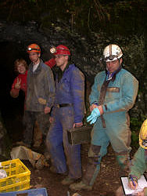

{kind=link}

Es werden folgende Themen angeboten:
|  |
| Bild: Höhlenbefahrungstechnik. |
Es wird ein solides Grundwissen in Befahrungstechnik vermittelt. Der Kurs umfasst Seil- und Knotenkunde, Sicherungstechnik, Schachteinbau, Stahlseilleiter sowie die Einseiltechnik und Kameradenrettung.
Die Voraussetzung jeder Forschung ist ein guter Höhlenplan. Es werden die Grundlagen der Plandarstellung, der Vermessungskunde und -technik erarbeitet, bis hin zum eigenhändigen Erstellen eines Höhlenplanes. Die Plandarstellung am Computer wird vorgestellt. Es wird der Umgang mit Hängezeug, Peilkompass und Distox geübt, der Theodolit wird vorgestellt.
Es werden Methoden zur Erfassung und Dokumentation der Höhlenfauna gezeigt und erprobt. Die Ergebnisse dieser Arbeit dienen der Beurteilung des Zustandes des Höhlenökosystems und fördern einen Beitrag zur Kenntnis der Höhlenfauna überhaupt. Zugleich sollen die Teilnehmer für die Bedeutung der Höhlen als Lebensräume sensibilisiert werden.
|
| Bild: Geologie - Korallenriff in Gerstetten. |
Die Geologie untersucht die Entstehung und Entwicklung von Höhlen, liefert aber auch hilfreiche Informationen für den Höhlenforscher. Wir wollen die Grundlagen der Geologie kennen lernen, zum Beispiel das Lesen und Erstellen geologischer Karten und Profile, Tektonik, Mineralogie. Untersuchung von Sedimenten und anderen Höhleninhalten, aus denen wir das Klima von vielen tausenden von Jahren ablesen können. Je nach Wetter werden wir auch oberirdische Exkursionen zu den geologischen Highlights des GeoPark Schwäbische Alb machen (Meteoritenkrater, Vulkanismus) und Fossilien suchen.
Elektronische Peiltechnik, Kommunikationstechnik, GPS-Navigation. Neben theoretischen Grundkenntnissen wird an Geräten deren praktische Anwendung demonstriert und geübt.
 |
| Bild: Angewandte Hydrologie - Messung der Schüttung des Blautopfs. |
Geräte für klimarelevante Aufzeichnungen und deren Übertragung an die Oberfläche. Neben theoretischen Grundkenntnissen wird an Geräten deren praktische Anwendung demonstriert und geübt.
Einführung in die Höhlenklimatologie: Was ist das, Wieso, Höhlenschutz, Exploration. Lufttemperatur und Luftzirkulation in Theorie und Übung. Wie plane ich ein eigenes Projekt, Datenauswertung.
Wasserabflussmessungen und Aufstauversuche, zur Berechnung nicht bekannter Hohlräume hinter Quellen, Salzversuch (Tracer) in einer Wasserhöhle mit Auswertung. Wir führen die Versuche in der Praxis durch und lernen bei der Auswertung die dahinter stehende Theorie.